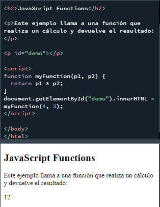
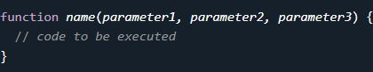
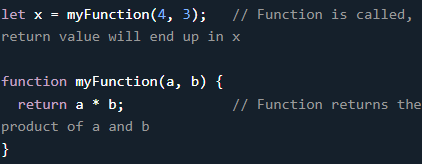
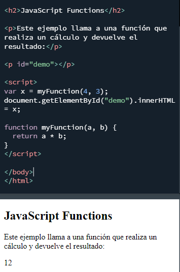
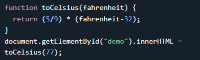
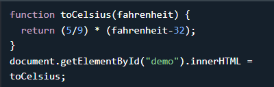
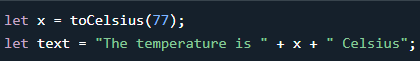
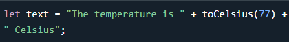
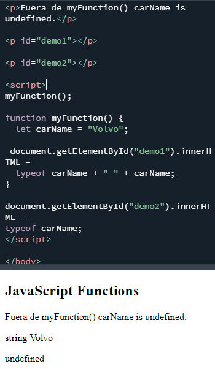

Una función de JavaScript es un bloque de código diseñado para realizar una tarea en particular.
Una función de JavaScript se ejecuta cuando "algo" la invoca (lo llama).
Una function de JavaScript se define con la palabra clave function, seguida de un nombre , seguido de paréntesis () .
Los nombres de funciones pueden contener letras, dígitos, subrayados y signos de dólar (las mismas reglas que las variables).
Los paréntesis pueden incluir nombres de parámetros separados por comas: ( parámetro1 , parámetro2> , ... )
El código a ejecutar, por la función, se coloca entre corchetes: {}
Los parámetros de la función se enumeran entre paréntesis () en la definición de la función.
Los argumentos de la función son los valores recibidos por la función cuando se invoca.
Dentro de la función, los argumentos (los parámetros) se comportan como variables locales.
Una función es muy similar a un procedimiento o una subrutina, en otros lenguajes de programación.
El código dentro de la función se ejecutará cuando "algo" invoque (llame) a la función:
(Aprenderá mucho más sobre la invocación de funciones más adelante en este tutorial.)
Cuando JavaScript llega a una declaración return , la función dejará de ejecutarse.
Si la función se invocó desde una declaración, JavaScript "regresará" para ejecutar el código después de la declaración de invocación.
Las funciones suelen calcular un valor de retorno . El valor de retorno se "devuelve" a la "persona que llama":
Calcula el producto de dos números y devuelve el resultado:
El resultado en x será 12:
Puede reutilizar el código: defina el código una vez y utilícelo muchas veces.
Puede usar el mismo código muchas veces con diferentes argumentos para producir resultados diferentes.
Convertir Fahrenheit a Celsius:
Usando el ejemplo anterior, toCelsius se refiere al objeto de la función y toCelsius() se refiere al resultado de la función.
Acceder a una función sin () devolverá el objeto de la función en lugar del resultado de la función.
Las funciones se pueden usar de la misma manera que se usan las variables, en todo tipo de fórmulas, asignaciones y cálculos.
Ejemplo: En lugar de usar una variable para almacenar el valor de retorno de una función:
Puede usar la función directamente, como un valor variable:
Las variables declaradas dentro de una función de JavaScript se vuelven LOCALES para la función.
Solo se puede acceder a las variables locales desde dentro de la función.

Dado que las variables locales solo se reconocen dentro de sus funciones, las variables con el mismo nombre se pueden usar en diferentes funciones.
Las variables locales se crean cuando se inicia una función y se eliminan cuando se completa la función.
